It has been a month here in the Philippines. Every morning I am awakened between 4 and 5 AM by a chorus of screeching chickens. There is a constant invasion of my home by ants, mosquitoes, the occasional cockroach, and every now and then, a hand-sized huntsman spider. All of this, along with sweating the entire Pacific Ocean every day due to the heat, are all just reminders of a fundamental fact: I am living in a very different place than I am used to, but that is all part of the experience!
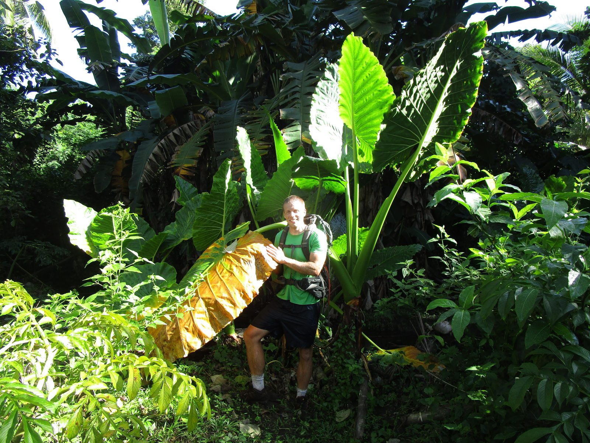
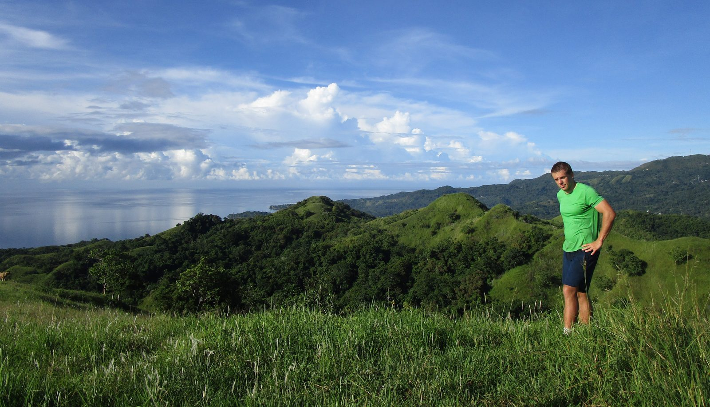
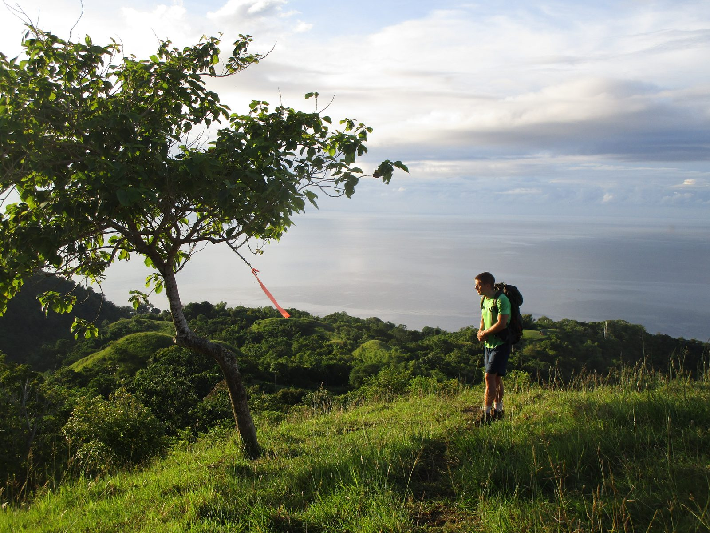
And one of the most important aspects of that experience is something I've left out so far: the people are wonderful!
I am here to teach many of these wonderful people, and this has come to highlight how different the schooling system is here from what I am familiar with. The biggest difference is the absolute focus on the LAS (Learning Activity Sheet), where the teacher would copy this onto the blackboard, and the students would copy it on a paper. This sheet would include exercises for the students to complete, but most of the class was this silent copying. At first, I felt like I wasn't actually teaching. However, I eventually realized that copying the LAS doesn't take up the entire class, and I'm free to use the remaining time as I see fit. So, I've started using some of that time to teach in my own way, presenting the material with clear, helpful, and interesting visuals and getting the students involved in class discussions.
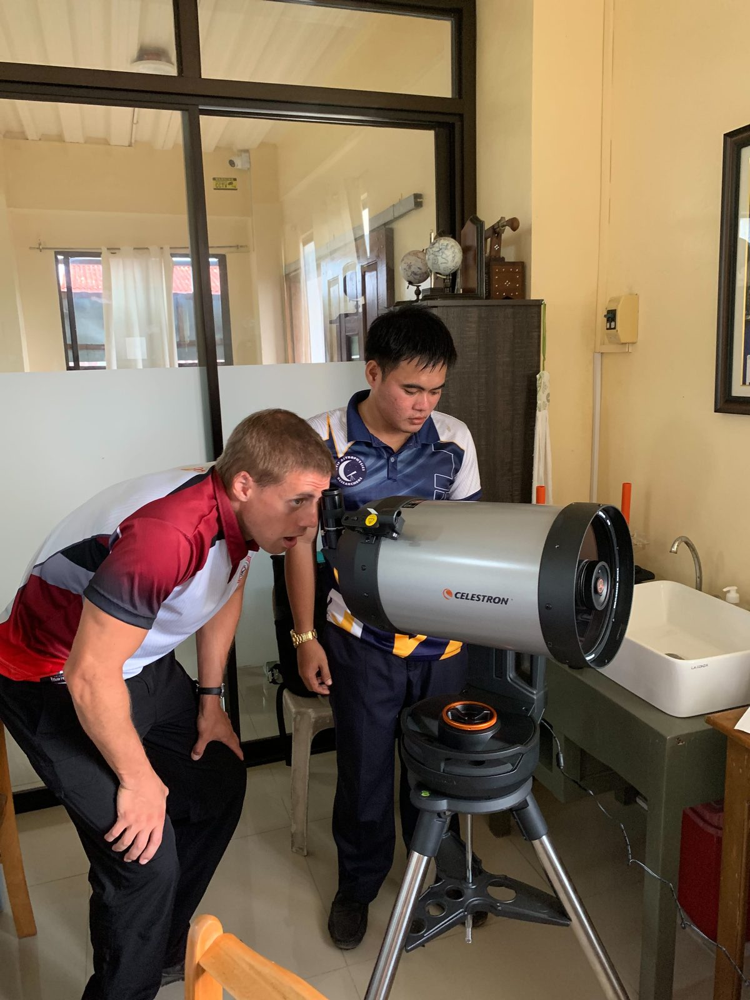
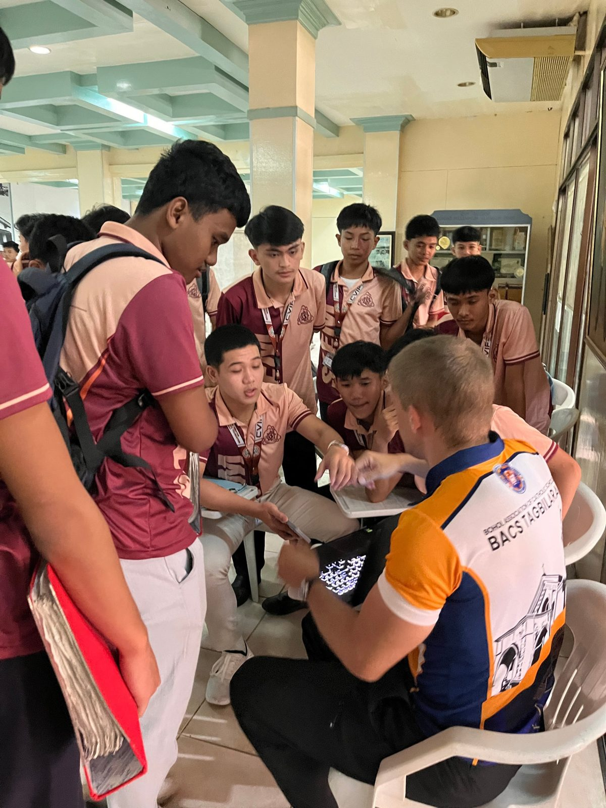
Of course, there are a few challenges. Most classrooms don't have AC, so there are numerous fans on at any given time. They are loud, making such class discussions difficult. In addition, there is a language barrier. Nonetheless, these are hurdles I'm working to overcome. Hopefully, I can establish a routine of topic presentations and class discussions alongside the required LAS work.
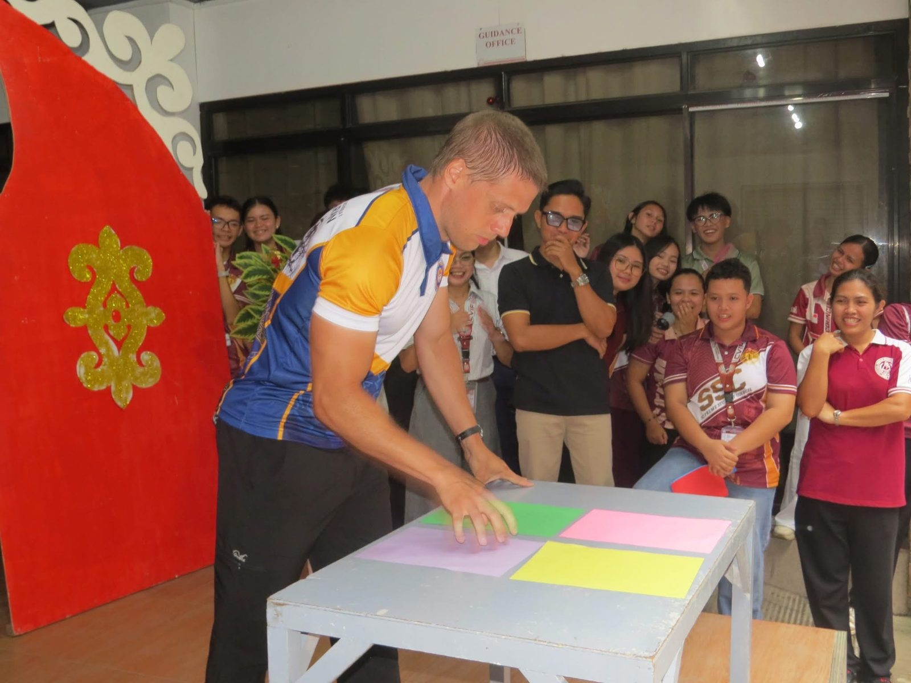
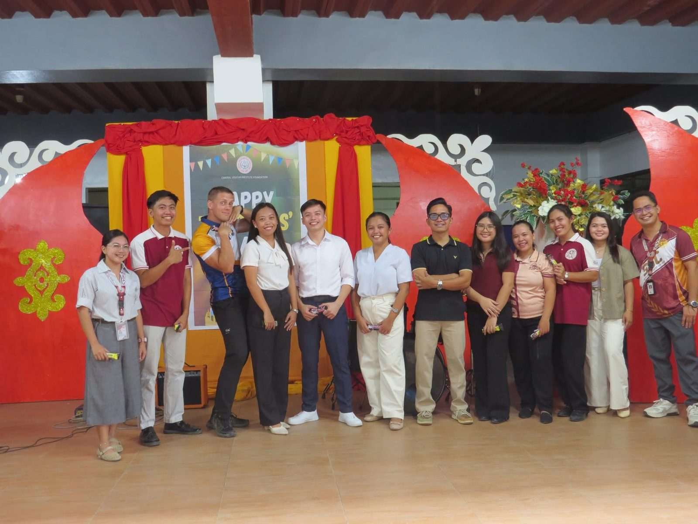
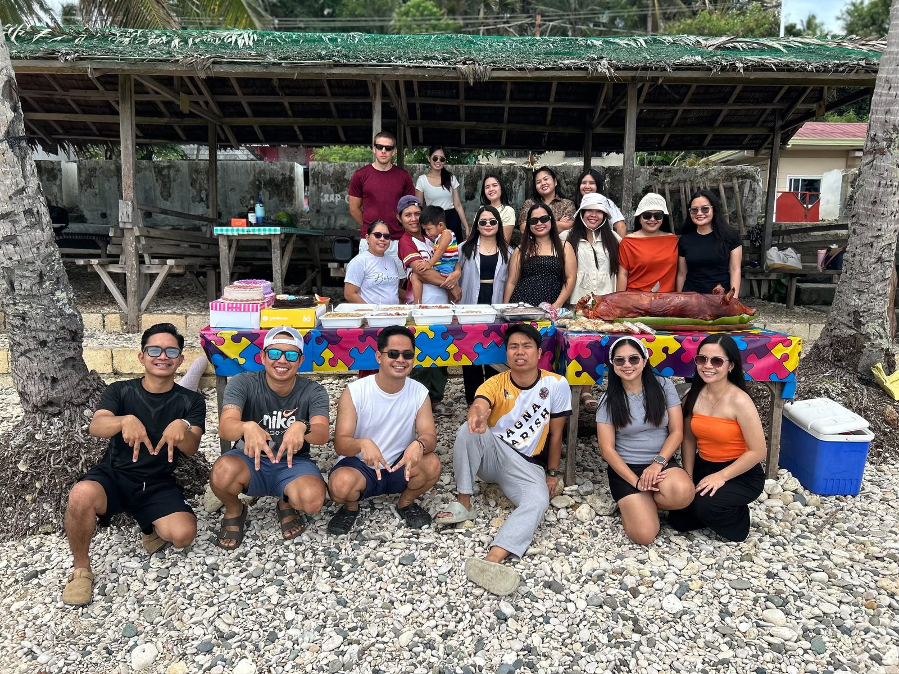
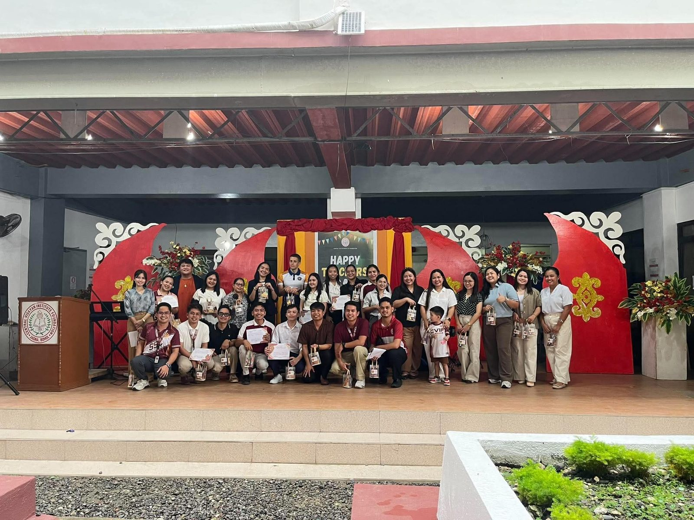
I came here to teach and perhaps explore a little of the Philippines during school vacations and breaks. I did not expect to attend conferences or give talks at universities, but within the span of a week at the beginning of the month, I was invited to give several talks at the Mindanao State University – Iligan Institute of Technology (one at the university physics department and two at local high schools), a talk at the University of San Carlos chemistry department, and I was invited as a Plenary Speaker at the National Physics Conference of the SPVM in Davao. In addition, I was later asked to be a judge at the SDG (Sustainable Development Goals) Pitching Competition at the same conference. To top it off, all these were to happen in the same week, which meant logistically one would have to be moved (sorry, University of San Carlos).
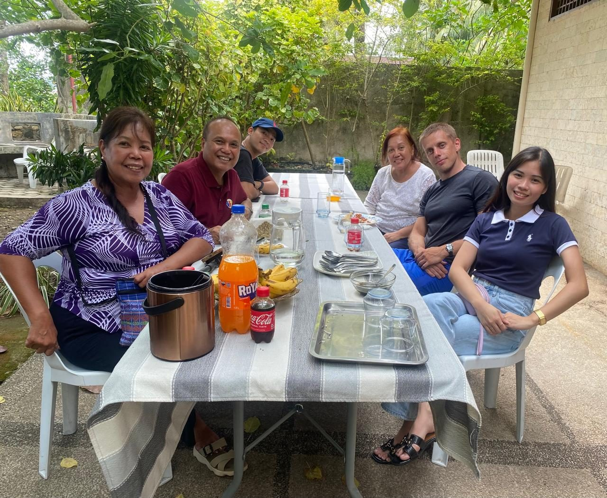
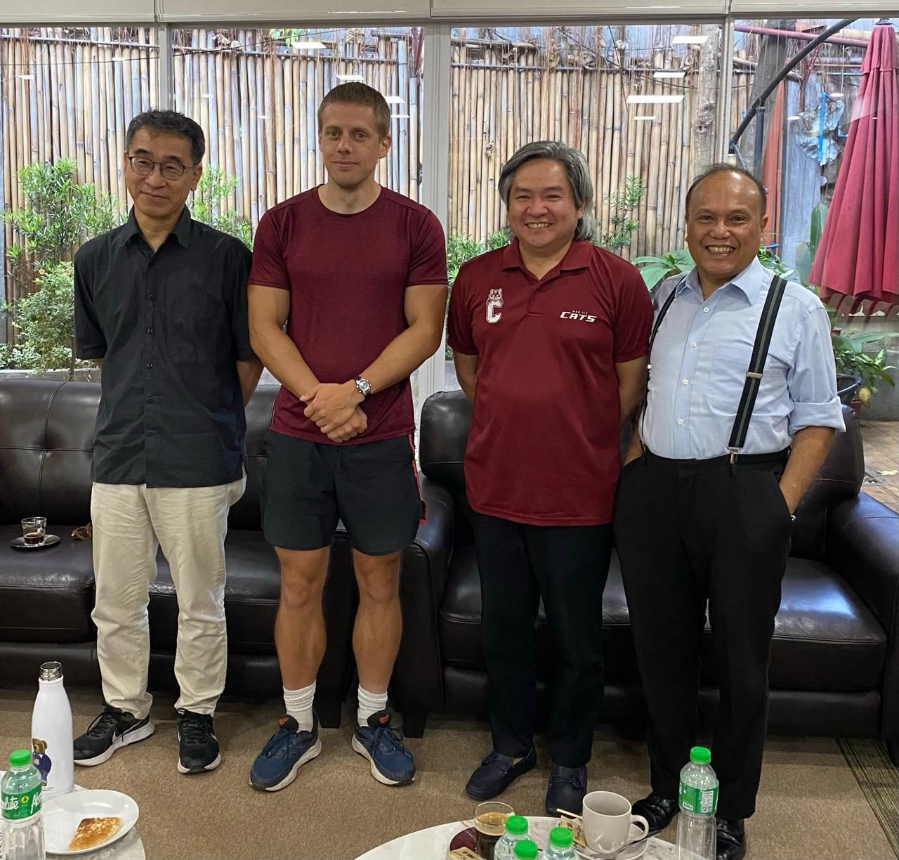
It's been a busy time, so far!
— Matthew Reinhold, Science Corps Fellow at CVIF, Jagna, Philippines (Sept 2026–March 2027)